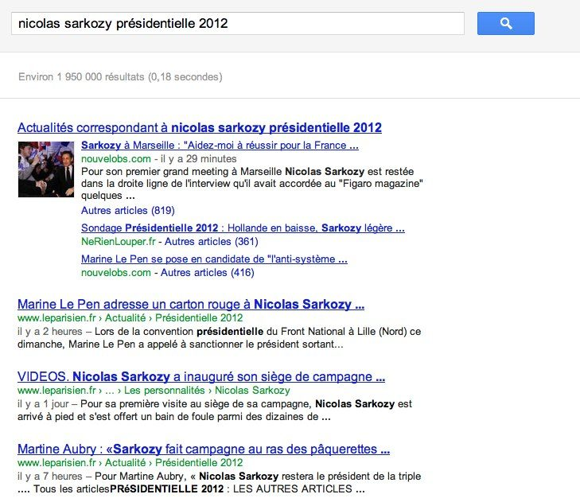
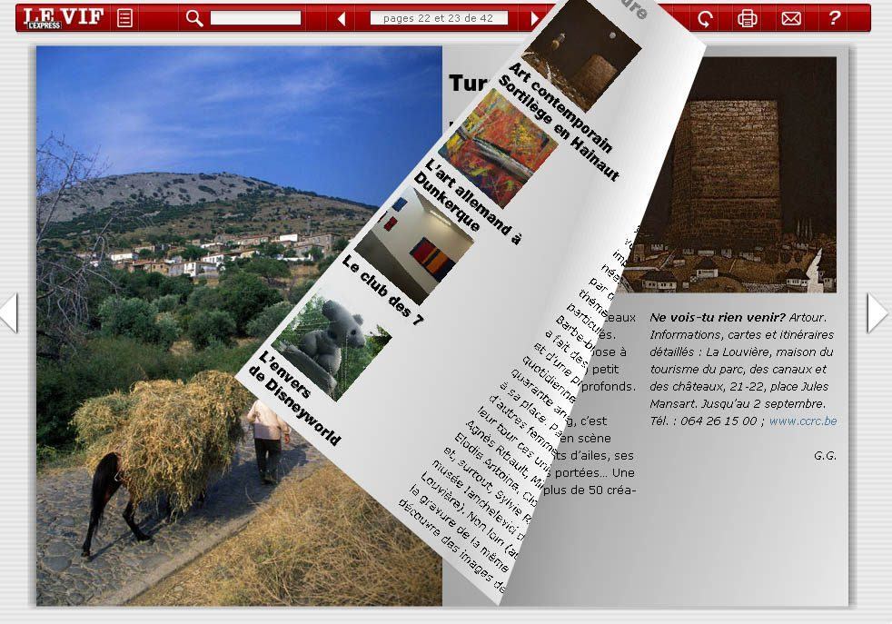
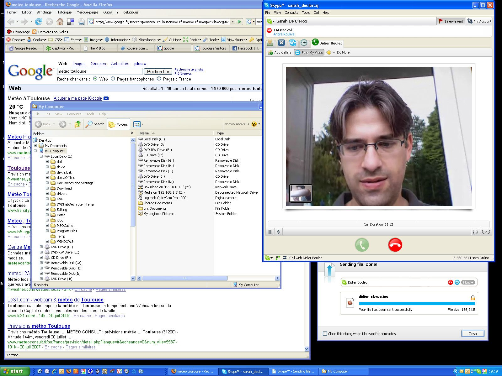
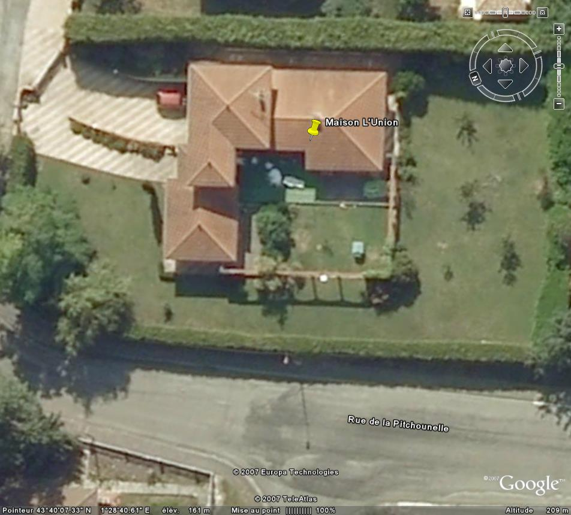

2014

2012

Nicolas Sarkozy, candidat à la présidentielle 2012 sur le net
Deuxième candidat sous la netloupe subjective: Nicolas Sarkozy Rappel, l'idée n'est pas de passer les programmes complets en revue, mais plutôt de donner un avis totalement subject…
Read the postFrançois Hollande, candidat à la présidentielle 2012 sur le net
Allez, un petit tour ce samedi sur les sites des candidats à la Présidentielle. L'idée n'est pas de passer les programmes complets en revue, mais plutôt de donner un avis totalemen…
Read the postA propos de Lampiris
Il y a quelques jours, j'ai décidé de changer de fournisseur d'énergie. J'en fais un tweet (vu que je tweete ce que je mange, ce que je bois et quand je perds au kicker au bureau (…
Read the postApple va-t-il m’offrir mon Apple? #7
Presque 4 ans après le premier post, et une crise et mi plus tard, voici la situation: le pari est toujours virtuellement gagné ! 1/ Février 2008, Un Mac Pro à 4.000 EUR TTC & 50 a…
Read the post2011
Passionate People / Why and How to measure statistics on your website
La présentation du dernier Passionate People est en ligne ! Vous trouverez toutes les infos sur le concept sur le blog Passionate People. 27 mai 2011, « Why and How to measure stat…
Read the postPassionate People / From an IDEA ... to an APP
La présentation du dernier Passionate People est en ligne ! Vous trouverez toutes les infos sur le concept sur le blog Passionate People. 24 mars 2011, « From an IDEA ... to an APP…
Read the post2010
Don't Just Roll the Dice - A Usefully Short Guide to Software Pricing
Seconde lecture de la semaine, un tout petit livre de Neil Davidson, co-founder and joint CEO of Red Gate Software, founder of the annual Business of Software conference avec le tr…
Read the postPassionate People / La qualité, un choix personnel ou imposé
La présentation du dernier Passionate People est en ligne ! Vous trouverez toutes les infos sur le concept sur le blog Passionate People. 10 juin 2010, « La qualité, un choix perso…
Read the postIdée du jour: TwitElection
En regardant la soirée d'élection du premier tour des régionales 2010 en France, je me suis demandé si l'idée suivante fonctionnerait. L'idée L'idée serait d'avoir en temps réel, e…
Read the postApple va-t-il m’offrir mon Apple? #6
Trois ans après le premier post, une crise plus tard, voici la situation: j'ai virtuellement gagné mon pari ! 1/ Février 2008, Un Mac Pro à 4.000 EUR TTC & 50 actions Apple achetée…
Read the postApple va-t-il m'offrir mon Apple Apple va-t-il m’offrir mon Apple? #5
23 mois après le premier post, une crise plus tard, voici la situation. L'action achetée à 122,08$ est une seconde fois à son plus haut depuis ... son existence. 50 actions, qui on…
Read the postPassionate People / "Global IT Solutions"
Les vidéos du dernier Passionate People (anciennement Telemis Technology Thursdays) sont en ligne ! Vous trouverez toutes les infos sur le concept sur le blog Passionate People. 25…
Read the postApple va-t-il m’offrir mon Apple? #5
23 mois après le premier post, une crise plus tard, voici la situation. L'action achetée à 122,08$ est a son plus haut depuis ... son existence. Ca c'est la bonne nouvelle. Le cour…
Read the post2009
Top 10 des films en 2009
C'est l'heure des classements sur tous les sites, dans toutes les revues. Comme vous le savez, le cinéma est une de mes passions, alors c'est parti pour mon top des films en 2009 E…
Read the postPassionate People / "Social Media - WTF(uzz)?"
Les vidéos du dernier Passionate People (anciennement Telemis Technology Thursdays) sont en ligne ! Vous trouverez toutes les infos sur le concept sur le blog Passionate People. 10…
Read the postTelemis Technology Thursdays - Return on Marketing Investment
Les vidéos du dernier Telemis Technology Thursdays sont en ligne ! Le concept est rappelé en bas de ce post. Le sujet était "Return on Marketing Investment" présenté par Vanessa va…
Read the postLa qualité de services, le nerf de la guerre #10
Je ne peux pas m'empêcher de la partager ... optical amplifieryoutube=http://www.youtube.com/watch?v=uIDF4jl21nw&hl=fr&fs=1&]
Read the postTelemis Technology Thursdays
Telemis Technology Thursdays? Cela fait quelques mois que Telemis a lancé ce nouveau concept, il est temps de vous en parler et de le promouvoir. L'idée principale derrière les Tel…
Read the postLes partis politiques belges sur le Net
Après avoir pris connaissance du dernier sondage pour les élections régionales en Belgique (donnant Ecolo à 35,5% de voies dans la circonscription de Huy-Waremme, glups!), je me su…
Read the postApple va-t-il m’offrir mon Apple? #4
Quatrième update sur les investissements Apple. La bonne nouvelle, c'est que l'action Apple a retrouvé son niveau de Février 2008, date d'achat à 122,08$. L'autre bonne nouvelle, c…
Read the postLa qualité de services, le nerf de la guerre #9
L'exemple du jour: Le garage volvo Malcorps à Wavre/Louvain-la-Neuve, Belgique. Hier après-midi, je vais chercher ma nouvelle voiture. - Rendez-vous à 15h, j'ai un peu de retard. L…
Read the postApple va-t-il m’offrir mon Apple? #3
Cela fait maintenant 1 an que j'ai fait mon post: Apple va-t-il m’offrir mon Apple? Après avoir fanfaronné quelques mois, avec un sommet à 188$, je n'ai pas vendu ces fameuses acti…
Read the postPresentation Twist
I watched this presentation today through Garr Reynolds blog. I really like the "twist". Made me think of Kayzer Soze. Now I'd like to to see The Usual Suspects again ;-) youtube=h…
Read the postVoo dans 10 ans?
Je lis l'article sur Tecteo et VOO dans le Trends de la semaine dernière (13 février 2009) et je souris. Je souris en lisant les phrases comme - "avec en toile de fond ce vieux rêv…
Read the postSony Pictures is aware (too)
Après Adobe (see previous post), voilà un deuxième exemple de Twitter-Marketing. Hier a été diffusé (sur FX, je pense) le premier épisode de la seconde saisons de Damages. - 1ère é…
Read the post2008
Bonne idée de CV ou pas?
Ce matin, dans un magazine pour les ingénieurs belges, je tombe sur cette annonce. Vrai ou fausse bonne idée? En tout cas le fond noir et le titre accrocheur "bonne nouvelle, je su…
Read the postDon't vote ... Vote!
Movie stars & Politics & Internet, I got to post this, it fills all my blog categories. youtube=http://www.youtube.com/watch?v=0vtHwWReGU0&hl=fr&fs=1] Jonah Hill is funny, rent Sup…
Read the postTest-Achats: Nécessaire ou Emmerdeur?
Autant, je pense que les articles de test-achats sont intéressants, autant je ne comprends pas quand je lis dans la presse: La fausse pénurie et la vente couplée? D'après ce que j'…
Read the postAdobe is aware ...
We know that companies are following what people are saying about them on the Internet. Many different sources are now available: Facebook groups, Twits, Blogs, Videos and so on. E…
Read the postMini-comparatif des prix Internet Belgique/France
Ce n'est qu'en déménageant de France vers la Belgique qu'on se rend réellement compte de l'énorme différence qui existe entre l'offre de fournisseurs d'accès Internet belge et fran…
Read the postExtending iPhone 3G battery life
Why would you buy an iPhone if you turn everything OFF ? ;-)
Read the postLe soir: la bonne transformation d'un de mes média "d'enfance"
Cela fait déjà plusieurs fois que cela me frappe, mais pas au point de poster dessus. Ce soir c'est en voyant l'article sur les "Premières images d'un interrogatoire à Guantanamo" …
Read the postI'm a movie producer :-)
This morning, I became a movie Assistant Producer. The film is called FREE FOR ALL...BUT YOU! and will be direted by Casey Walker. the film is best known as the "My Million Dollar …
Read the postWould this be the best movie of 2008?
Where the Hell is Matt? (2008) from Matthew Harding on Vimeo.
Read the postLa qualité de services, le nerf de la guerre #8
Je suis tombé récemment sur un fil de discussion Linkedin concernant la Qualité de Services. Un personne avait posé la question de la définition d'un services 5 étoiles. Plusieurs …
Read the postEchanger des SMS via les plaques d'immatriculation
Voilà une idée qui traîne dans l'air depuis pas mal de temps. Je suis tombé par hasard aujourd'hui sur un site qui permet d'utiliser les plaques d'immatriculation pour s'envoyer de…
Read the postRoulive's family at the Zoo
Ok, ok, this won't sound interesting for all my dear readers. But, anyway, you'll find hereunder a short edited movie about our day at the Toulouse Zoo (Plaisance de Touch to be mo…
Read the postComment ne pas apprendre l’anglais #2
Mais c'est quoi cette idée de tout traduire !
Read the postPicasa's Hello sounds more like Goodbye
On Read/Write Web. Philipp Lenssen at Google Blogoscoped noticed today that Google announced that it will be shuttering its Hello photo sharing and chat application next week. Hell…
Read the postVidéo virale pour marque de Jeans? Génial!
Je participe à la "viralité" de cette vidéo avec plaisir. C'est génial. youtube=http://www.youtube.com/watch?v=pShf2VuAu\Q&hl=en]
Read the postNice websites names
Peter Norvig at Startup School 08
Read the post51 heures dans un ascenceur ... étonnante vidéo
youtube=http://www.youtube.com/watch?v=p\bMhNI\TY8]
Read the postQuote of the day #42 (Paul Graham, Ycombinator)
Paul Graham, founder of YCombinator, speaks at Startup School 08 about how to create a successful startup
Read the postApple va-t-il m'offrir mon Apple? #2
Cela fait trois mois que j'ai fait le post suivant: "Apple va-t-il m’offrir mon Apple?" Achetée à 122,08$ il y a 3 mois, l'action vaut aujourd'hui 184,75$. 50% en 3 mois c'est un e…
Read the postMac vs Windows ?
Third time and I have my MacPro for two days now. Don't believe people saying that MacOs is more stable than Windows XP :-) Uploaded with plasq's Skitch!
Read the postDipity: Create Timelines, begin with yours
Un petit tour sur Dipity. Vous créez votre profile, vous encodez vos logins Last.fm, Flickr, Picasaweb, blog perso, Twitter, et .... hop ... votre Personal Timeline est créée. En l…
Read the postQuelle révolution: Itunes, premier distributeur de musique
Vous l'avez certainement lu le week-end dernier: Apple a annoncé que sa boutique de téléchargement en ligne iTunes Store était devenu le premier distributeur musical aux Etats-Unis…
Read the post
La correction orthographique très sexuelle de Firefox
Je n'en dis pas plus.
Read the postLa qualité de services, le nerf de la guerre #7
Je fais un petit add-on à mon post précédent, parce que ce vendeur internet m'a encore impressionné. Dans le courant de l'après-midi, soit 3h après la commande internet, ils m'ont …
Read the postLa qualité de services, le nerf de la guerre #6 (Un email à 1.000 EUR)
Oui, bon le titre est un peu accrocheur, mais il est plutôt réaliste. Depuis quelques temps, je me dis que je vais racheter une caméra vidéo. Après moultes recherches, je m'arrête …
Read the posttwhirl-0.7.5.air ?
Mais c'est quoi encore ce truc de geek, les ".air". Franchement, mettre twhirl-0.7.5.air dans sa download page, c'est une bonne manière de se couper de 3/4 des utilisateurs potenti…
Read the postPetite promenade avec Google Earth
Oui je sais, c'est pas nouveau, mais vu je viens d'installer Google Earth et je joue un peu avec depuis 15 minutes. Et fanchement, je suis toujours impressionné. J'avais fais un po…
Read the postIkea : Mais comment font-ils ?
On peut être ou pas un fan d'Ikea, il faut reconnaître qu'ils sont incroyables pour tout ce qui touche à l'expérience du client dans ses magasins. Ca en devient tellement naturel, …
Read the postNouveau : le "service client" arrive enfin en Belgique
Après de longues années d'attente ils semblent que le service client (customer care ou customer service comme on dit aux amériques) pointe enfin son nez en Belgique. De manière gén…
Read the postLe test Pepsi / Coca pour un achat de livres
Vu que ma tendre épouse m'offre un petit WE de repos (cad sans la triplette), je me suis dit qu'il me fallait des bouquins. Et cette fois ci, je voulais des livres en français et s…
Read the post
Email, Agenda, Feeds, les outils pour s'organiser aujourd'hui ...
Comme je suis toujours à la recherche de nouveaux outils pratiques pour travailler plus efficacement (en pensant encore naïvement que l'outil est la solution alors que je sais que …
Read the postMac Book Pro : the white screen of death ..
Today was my first bad day with a Mac. I did the usual "update software" ... and rebooted the mac. And bang .. white screen of death ... blank screen nothing else, no mouse, no key…
Read the postComment survivait on il y a 10 ans ?
Ca fait un petit temps que je pensais écrire ce post alors finalement entre deux panades, je me lance pour le premier draft. En gros je vais faire le tour de tout ce qu'on fait auj…
Read the postDes mannequins vous aident à choisir de la lingerie ...
Mais pourquoi est-ce que je trouve que ce site est une bonne idée? Et voilà la question du jour: connaissez-vous les mensaurations de votre conjointe? Et le tip du jour: notez-les …
Read the postPremière grève sur Ebay?
J'ai vu ceci sur le site du Figaro hier ... «Rejoignez la révolution Ebay!». C'est le mot d'ordre du jour des grévistes qui réagissent aux mesures annoncées par la direction d'eBay…
Read the postQuote of the day #29
YouTorrent: Give It A Shot Before It’s Shut Down Duncan Riley on TechCrunch
Read the postTriggit, to seamlessly insert content
I didn't try this yet, but I'm probaby going to ... What do you think ? The Triggit web application allows you to place media and ads with simple clicks and drags. No more embed co…
Read the postLa qualité de services, le nerf de la guerre #5
A l'aéroport de Toulouse-Blagnac, il y a 5 parkings différents. Comme partout ailleurs, courte durée=proche=cher et longue durée=loin=moins cher. Le P5 est le plus loin. Entre 3 et…
Read the postBill Gates CES Keynote
Ce soir, j'ai regardé la keynote de Bill Gates au CES 2008.En soi ce n'est pas super passionant, rien de réellement exeptionnel. Par contre, j'ai bien aimé le démarrage avec la vid…
Read the postDiposable emails @ Mintemail.com
I didn't know about this site before today. Mintemail provides you freely with disposable (temporary) email addresses. It just super simple to use 1. You go to the website (<http:/…
Read the post2007
Newlayout
While surfing tonight, I stumble accross R.Bhavesh website and his WP Premier Theme. I decided to give a try to the Soft Red Version. I like it a lot ...
Read the post
Premières expériences Mac
Eh bien voila, un petit mac book pro est en route vers chez moi et devrait arriver comme le petit jésus dans quelques jours. J'ai donc enfin cédé à la pression de didier et décidé …
Read the postLa qualité de services, le nerf de la guerre #4
Samedi 23 décembre, 16h30, Magasin Leclerc de Blagnac (Toulouse, France). On fait du shopping avec Sarah, on s'arrête devant les téléphones portables. Pas forcément d'achat envie, …
Read the postEst-ce normal?
Est-ce normal que quand on cherche "Firefox" sur Microsoft Live Search, on tombe en first hit: Internet Explorer : Téléchargez-le maintenant :-) voir: <http://search.microsoft.com/…
Read the postQuote of the day #24
"Memo to Badoo, Bebo, Catster, Dogster, Facebook, Faceparty, Flickr, Flixster, Hi5, Hyves, Imbee, Imeem, MySpace, Mixi, Pizco, Pownce, Takkle, Twitter, Virb, Vox, Xanga, Xing, Zoom…
Read the postChris Anderson's Nokia World 2007 Keynote
Chris Anderson's Nokia World 2007 Keynote, a keynote to see (46 minutes). Perfect slides, Great speaker. And if you haven't read Chris Anderson's Long Tail ... here is my review of…
Read the post52 minutes sur Google et un peu plus ...
via Loïc Le Meur, un reportage intéressant (bien que très général) sur Google. Du coup j'ai "googlé" Marissa Mayer et je suis tombé sur deux points intéressants 1. Marissa Mayer's …
Read the post"Big Brother" @ Home
Comme certains d'entre vous le savent peut être (ou pas d'ailleurs), je suis depuis peu propriétaire d'une beeeelle maison, ou plutot disons que ma banque me donne le droit d'occup…
Read the postQuote of the day #22
"The old perception is that closed data is a competitive advantage. The new reality is that open data is a competitive advantage. The likely solution then is to stop worrying about…
Read the postLe lien du jour: Le Web3 en live
Assurément le lien du jour ... <http://live.vpod.tv/
Read the postWIFI available in airplane? Next week!
Published December 7th, 2007 on Le Soir. JetBlue proposera dès mardi sur l’un de ses appareils un service d’e-mail et de messagerie instantanée gratuit, et elle sera suivie d’Ameri…
Read the postVous avez dit Ajax?
Vu sur Korben's blog
Read the postWikio +13.000
Un grand pas pour l'humanité, je jette un oeil à Wikio aujourd'hui et je vois que depuis mon dernier post, il y a 1 mois exactement, The R Blog a gagné 13.000 places. Doit y avoir …
Read the postThe power of Facebook
Two days ago, I updated my Facebook relationship profile by adding Sarah. In the meantime, as we have three children but are not married, I switched the status from "In a relations…
Read the postSeesmic update
Je viens d'écouter Loïc Le Meur sur BFM. Toujours aussi enthousiaste, peut-être même encore plus depuis qu'il habite à San Fransisco. Sympa. J'ai surtout écouté ce qu'il disait sur…
Read the postZune 2 - nice features
Based on Zune 2: five things Microsoft did right Two nice features that will be avaible on the next Zune. None of the two is really revolutionary but I really don't understand why …
Read the postLoïc Lemeur New Startup
Loïc in starting is new company in SF. As from today, he will be posting a video per day. Probably a nice way to learn things about entrepreneurship. youtube=http://www.youtube.com…
Read the postTel est pris ...
Lu sur Nowhere Else, dont je reprend le texte ... Incroyable news, le célèbre tracker de trorrents The Pirate Bay compte porter plainte contre certaines grandes compagnies de l’ind…
Read the postClassement des blogs belges francophones
Le Classement des blogs belges francophones est fait par Vinch. Et trop cool, yes, super, génial, ouaw, oh putaing, diantre, palsembleu, vertuchon, ... The R Blog est dedans. Bon d…
Read the postMechanical Turk and Steve Fossett
I hadn't heard of Amazon Mechanical Turk before today and it's use to try to find Steve Fossett. Amazon's definition is "we build complex software applications based on the things …
Read the postGoogle Library
Grâce à Pierre, je suis passé sur la Google Library ce soir. Je n'avais jamais regardé à quoi cela ressemblait. Impressionnant. Une page de recherche simple à la Google, une page d…
Read the postPétition : Pour l'Unité de la Belgique/ Voor de eenheid van België/
Ce n'est pas mon genre de diffuser des pétitions, mais ces derniers temps vous l'aurez compris, je trouve ridicule le jeu (ou pas?) auquel se livrent nos hommes politiques en Belgi…
Read the postAnimoto, pas mal du tout
Animoto est ouvert depuis ce 16 août. Ca vaut une petite visite. Voilà, ci-dessous, ce qu'on peut faire en 30 secondes montre en main. C'est un compagnie basée à New-York qui aurai…
Read the postLa qualité de services, le nerf de la guerre #3 (Michel de Guilhermier)
On peut lire dans un post le blog de Michel de Guilhermier ce matin: "En effet, quand on vend des produits avec une forte valeur ajoutée et une forte marge à une clientèle plus res…
Read the postEric Schmidt on Web 3.0
Short but interesting video. What does the CEO of Google answer "when asked "What is Web 3.0?" First, he makes a joke (because, as everyone else, he absolutely has no idea of what …
Read the postUn thème
Voilà, j'ai changé de thème. Je cherchais un thème: 1. Aéré (mouais) et pas trop de fond 2. Avec une center column assez large 3. Avec des fonts lisibles (oui je sais, suffit de ch…
Read the postInbox Zero, un début ...
youtube=http://www.youtube.com/watch?v=vd69qNhwGQQ]
Read the postQuote of the day #13
"A child is the ultimate startup, and I have three. This makes me rich". Guy Kawasaki PS: me too.
Read the postEric Sink on the Business of Software
Eric Sink est Software Developer (comme il dit) et accessoirement patron chez SourceGear, réputés pour SourceOffSite et SourceGearVault. Son blog est réputé, et après un bon blog a…
Read the post
Le Vif L'Express sur le web
Je ne sais pas depuis combien de temps cette version est en ligne, mais je trouve ca bien foutu. Intégration de photo, de vidéo dans les pages. Naviguation conviviale et sympathiqu…
Read the postQuote of the day #12
My good friend Pierre just bought a HTC P6300. He's replacing his Qtek S110. Good choice or not? I'll get back to you on that subject later. He'll probably receive it in the coming…
Read the postWebapps VS. Desktop Apps, an example with JayCut
I've just tried out Jaycut beta, an online editing tool. By definition, Jaycut has a lot of nice features: 1. upload on the web, means some kind of backup for your local data 2. ea…
Read the postLa phrase du jour #11
"Next time you're interviewing for a job, pretend that the power structure is reversed. The hiring manager is trying to figure out if there is any chance you are worthy of the job.…
Read the postFlash to start
via Eric de Presse-Citron, une collection de pages d'accueil en Flash rassemblé par Smashing Magazine. C'est vraiment bourré d'idées originales parfois design, parfois agréables, p…
Read the postInbox Zero (Merlin Mann)
Merlin Mann on action-based email. (through Tech IT Easy)
Read the post
Rank #1 on Google?
I'm impressed. Three words "fin de Potter" or in English "End/Conclusion of Potter", and I've got a top 1 place on Google.fr for one of my latest post on the book. I don't even hav…
Read the postGenoom
Deux semaines après avoir posté un article sur Geni, je reçois un email avec de la promotion pour Genoom, soit la même chose mais en français, un peu moins touffu aussi. On retrouv…
Read the post
Skype in HiDef
This afternoon, during my latest Skype call with my dear friend Didier, I was really impressed by two things. First, it wasn't raining in Brussels. Second, the Skype video quality …
Read the postLivestation & P2P TV
WebTV and P2P TV are hot topics for the moment. I didn't have the opportunity to watch the Livestation hereunder before today. I like it, smooth and live. If you interested to lear…
Read the postFacebook fun
Just subscribe to Facebook today, as it seems everyone is on Facebook. In the profile page, you can select your sex and the one your interested in. If you don't look closely, you c…
Read the postLe conseil de Seth #3
"The art of marketing is not finding more money to do more marketing. It's figuring out how to tell a story that spreads with the resources you've got." Seth Godin
Read the postLa qualité de services, le nerf de la guerre #2 (exemples US)
J'espère qu'Antoine ne m'en voudra pas de reprendre le texte de son post sur le service américain. Quelques bons exemples. Le service américain Je croyais que les Japonais étaient …
Read the postLa phrase du jour #9
"It is well designed, has lots of intelligent features, and is almost sure to drop into obscurity immediately after launch" Michael Arrington sur TechCrunch à propos de Steamy
Read the postGeni ... généalogie web 2.0
Allez jetez un oeil sur Geni, c'est vachement bien foutu. Et plus d'explications dans cet article.
Read the postCynical Web 2.0
Ce matin dans les news à la radio. Un homme se fait juger pour enlèvement d'enfants. Une femme se fait juger pour abandon d'enfant. Si on est très cynique (et tordu, comme dirait A…
Read the postFT contre le free WI-FI
France Telecom attaque la mairie de Paris France Telecom attaque ma mairie de Paris pour excès de pouvoir au sujet de son réseau "Paris wifi" (Les échos), qui proposera l'internet …
Read the postVotez pour moi!
Loïc a mis un vote indicatif sur son site pour la Blogakademy. Le jury tranchera au final, mais bon, c'est toujours bien d'avoir les faveurs du public ;-). on remarque déjà un tend…
Read the postBlogAkademy chez Loïc Le Meur
Vous avez peut-être entendu parler de la BlogAkademy lancée par Loïc Le Meur. Je trouve cette idée plutôt sympathique. De manière générale, faire participer d'autres personnes à so…
Read the postGmail down
It does not happen often.Sunday July 8th 2007, 10.30 AM (GMT+1) Gmail est temporairement indisponible. Nous travaillons actuellement à la résolution de ce problème. Essayez de vous…
Read the postCV en flash
CV d'Alexandre Guéniot.
Read the postLa phrase du jour #7
"C'est un truc qui s'appelle Emule, c'est un copain qui m'en a parlé. Non c'est légal, c'est comme un réseau d'amis qui partagent des trucs" Deux filles qui discutaient à la table …
Read the postAllow spammers to email me
vu sur 37 Signals
Read the postFree Feedburner Pro ?
FeedBurner has ceased charging for two premium features following their acquisition by Google in May.FeedBurner Stats PRO, a service that provides detailed statistics including sub…
Read the postPremière vidéo porno sur The R Blog
Difficile de mieux présenter le sujet. (vu sur Bozarblog)
Read the postExplore, create and share color themes
Kuler, Adobe mini-site to share color themes. Nicely done, simple, elegant and useful.
Read the postIPhone testé par le NYTimes
Plein de tests de l'IPhone en ligne ce matin. Le plus sympa, celui du NYTimes, en vidéo, ci-dessous. youtube=http://www.youtube.com/watch?v=VcRfAaIb2Ro] Les +: tout ce qui est dit …
Read the postGoogle Reader va-t-il changer ma vie?
Ce soir, je suis passé de Netvibes à Google Reader. Tout d'abord, ca s'est fait en 3 minutes. Fantastique. Ca me change de l'upgrade Wordpress ;-) Mais surtout, je pensais que j'au…
Read the postLa phrase du jour #6
"Attends, je te rappelle dans 5 minutes, j'arrive chez mon client" d'Un ami consultant. Je ne me rappelle plus des termes exacts de la phrase mais cela se déroulait il y a 2 semain…
Read the postIPhone Guided Tour
Et voilà l'IPhone Guided Tour. Ca doit être la news la plus postée ce jour, mais je la relaye quand même parce que je suis impressioné par ce petit tour. Au final, je me demande to…
Read the postTout Le Monde En Blogue
Tout Le Monde En Blogue est un genre d'annuaire de blogs francophones (classés par pays) mais dont l'objectif clairement affiché est de faire la promotion de son blog.
Read the postKawasaki on Zentation
Zentation permet de partager une présentation, en synchronisant la vidéo et le powerpoint. Faudrait que je fasse ca un de ces jours pour nos présentations. Mais je profite surtout …
Read the postLa phrase du jour #4
Belle journée, deux phrases en un jour. "When there is no quiet, there can be no loud" La phrase est reprise par Garr Reynold sur son blog Presentation Zen, avec un article intéres…
Read the postLa phrase du jour #3
“Provide more service than you get paid for.” Lee Brown En rapport avec mon post d'hier, sur La qualité de services, le nerf de la guerre 1 (9Telecom). Plosson ne me contredira pas…
Read the postLa qualité de services, le nerf de la guerre #1 (9Telecom)
Allez, je me lance dans une série de posts sur la qualité de services, le nerf de la guerre. Aujourd'hui, on n'a jamais mis autant la qualité de services en avant, et globalement l…
Read the postC'est dinge ce truc!
C'est dingue ce site: <http://www.tv-links.co.uk Des séries TV, des films, des dessin-animés, des clips vidéos, etc. Y'a des tonnes de trucs, en bonne qualité, en temps-réel, qui n…
Read the postCa m'énerve
C'est le genre de truc qui m'énerve. J'upgrade wordpress pour passer à la version 2.2, et hopla mon thème foire. J'en prends un autre, ca foire aussi ... Bref désolé pour le look d…
Read the postGare aux cons
youtube=http://www.youtube.com/watch?v=nlW0iEmuUzY] Voilà tout l'humour "2007" résumé. Quel joli travail, bravo!
Read the postPour ceux qui n'en n'ont pas, quelqu'un a toujours une idée
Voilà l'idée des idées, Cambrian House. Comme FredCavazza l'a déjà résumé, je ne vais pas dire autre chose: CambrianHouse = Startup + Crowdsourcing Le principe est le suivant : 1. …
Read the post
Google Earth passe au-dessus de chez moi
Et voilà, Google est passé au-dessus de chez moi. Enfin, disons plutôt que Google Earth a mis à jour la précision des vues de la banlieu toulousaine. Le plus étonnant c'est qu'elle…
Read the postBill Gates & Steve Jobs at D5
Bill Gates & Steve Jobs à la conférence D5. Les vidéos circulent depuis 2 jours, mais je n'ai pu commencé à les regarder qu'aujourd'hui. Je les poste toutes d'un coup, même si pour…
Read the postLe conseil de Seth #2
"Maybe the reason it seems that price is all your customers care about is... ... that you haven't given them anything else to care about." Seth Godin
Read the postLa phrase du jour #2
"Il semble finalement que ce qui différencie le Web 2.0, du Web 1.0, ce soit surtout le numéro de version". Stéphane Billard
Read the postDon McMillan, Powerpoint comedian
Connaissez-vous Don McMillan? C'est un ancien ingénieur qui sort de Stanford, qui a travaillé chez IBM et AT&T. Mais, il fait du stand-up, et doit être le seul "Comedian" comme dit…
Read the postL'interface TV du futur d'après Open TV
Un article intéressant sur Télévision 2.0, L’EPG animé, clé des usages de la TV interactive, avec une présentation des orientations futures. La TV s'inspire du Web pour les recomma…
Read the postDurex XXL...
Un éléphant, ca trompe énormément. vu sur Ads of the World.
Read the postLe frigo comme Web 3.0?
Vu sur 37signals, un site web original pour la sortie du bouquin No one belongs here more than you. Le marketing, c'est les idées ...
Read the postSi on m'avait expliqué la physique en images ...
Je tombe par hasard sur une vidéo qui sort des labos de l'université de Twente en Hollande. Une démonstration du Kaye Effect, en vidéo, à du 1000 images par seconde. Quelques expli…
Read the post10 Newspaper Myths Deconstructed
Chaque fois qu'une article est posté sur Information Architects Japan, c'est passionant, en plus d'être bien écrit et toujours très désign dans les illustrations. Certains ont du t…
Read the postLe monde vu par WorldMapper
Ce soir je reçois un texto pour me dire que je ne post plus. Ca motive évidemment. J'en aurais des choses à raconter aujourd'hui sur la vie des PME. Mais je vais plutôt vous montre…
Read the postLa phrase du jour
Les créateurs d’Apple sont des génies du design et de l’ergonomie. Les utilisateurs d'Apple sont des personnes qui pensent être des génies du design et de l’ergonomie.
Read the postCe que Bush a fait de mieux
C'est probablement ce que Bush a fait de mieux ces dernières années, mais je salue aussi le travail du fou qui a passé son temps là-dessus. youtube=http://www.youtube.com/watch?v=4…
Read the postLes délinquants de la cigarette
Une vidéo qui vaut le détour. Un monde dans lequel la France livre une lutte sans merci contre le tabac, on n'est plkus fumeur, on est délinquant de la cigarette. Ce qui est drôle,…
Read the postCréer son profil 3D sur Meez.com
A part pour le fun, je ne vois pas trop l'intérêt, mais voilà, je suis tombé sur Meez.com aujourd'hui. On crée son personnage 3D qu'on peut réutiliser dans son blog, pour signer se…
Read the postLe top des produits (web) présentés à DEMO 2007
Demo 2007, the launchpad for emerging technologies vient de se terminer en Californie. Toutes les présentations sont en ligne. On y voit: - Jaman, certainement inspiré du célèbre L…
Read the postBill Gates au Daily Show
Jon Stewart est probablement un des présentateurs actuels les plus drôles et sympathiques. Hier soir, il avait Bill Gates sur son plateau pour la présentation de Windows Vista. Il …
Read the postPourquoi Google achète des terrains et prend le contrôle de la fibre?
Un article intéressant sur Google, ses achats de terrains pour construite des Data Centers, sa manière de prendre le contrôle de la fibre, tout ca pour quoi? Peut-être devenir le m…
Read the postLes 50 sites les plus cools de 2006 (Time)
TIME publie la liste de leurs 50 sites les plus cools de 2006. Plein de choses connues si vous suivez, autremement it's worth a click.
Read the postC'est ca la célébrité
C'est quand on a sa photo dans un expo. Ou quand on surfe sur Dumpr qui permet de générer automatiquement ce genre de photo. Alors, la célébrité devient simplement le fait d'avoir …
Read the postLe nouveau Nokia 6133
C'est parce que le nouveau Nokia 6133 est tellement agréable à utiliser à une main, avec son "one-hand flip", que Nokia en fait la promotion via quelques jeux en ligne sur PushtoSt…
Read the postVirgin America, quand l'avion devient Web 2.0 ou presque
Innovation, Marketing Viral et Internet en même temps, voilà le genre de post qu'on met dans toutes les catégories. Virgin America lance une campagne de marketing viral (en fait, u…
Read the postMost contagious / 2006
Contagious Magazine a publié un manifesto design et passionant sur les produits, idées, technos, pubs, gadgets, designs, jeux les plus "contagieux" de l'année 2006. Bien-sûr, on y …
Read the postMacLeod of the day
Ce dessin semblera peut-être bien approprié à ceux qui me connaissent ;-) Hugh MacLeod dessine au dos des cartes de visites. Mais il ne fait pas que cela, il travaille aussi pour S…
Read the post